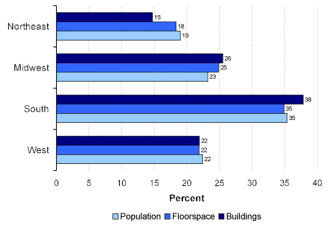
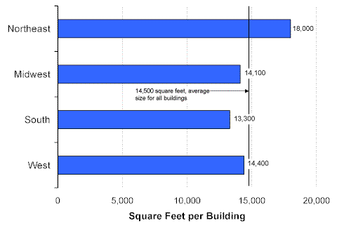

| Home > Commercial > Commercial Buildings Characteristics > Census Region | ||||
|
Census RegionThe distribution of commercial buildings, floorspace, and population by Census region in 1999 was very similar (Figure 1). More than one-third of buildings, floorspace, and population were found in the South region, while the Northeast had the smallest percentage of each (less than 20 percent). Figure 1. Percentage of Buildings, Floorspace, and Population by Region, 1999 Energy Information Administration Commercial Buildings Energy Consumption Survey, and U.S. Census Bureau, Statistical Abstract of the United States: 2000 The commercial buildings in the Northeast region were about 25 percent larger than average and larger than buildings in the other three regions, which were similar in average size (Figure 2). Figure 2. Average Building Size by Region, 1999 Energy Information Administration Commercial Buildings Energy Consumption Survey
Return to:
Specific questions may be directed to: Alan Swenson
Release date: May 21, 2002 If you are having any technical problems with this site, please contact the EIA webmaster at wmaster@eia.doe.gov. |
||||